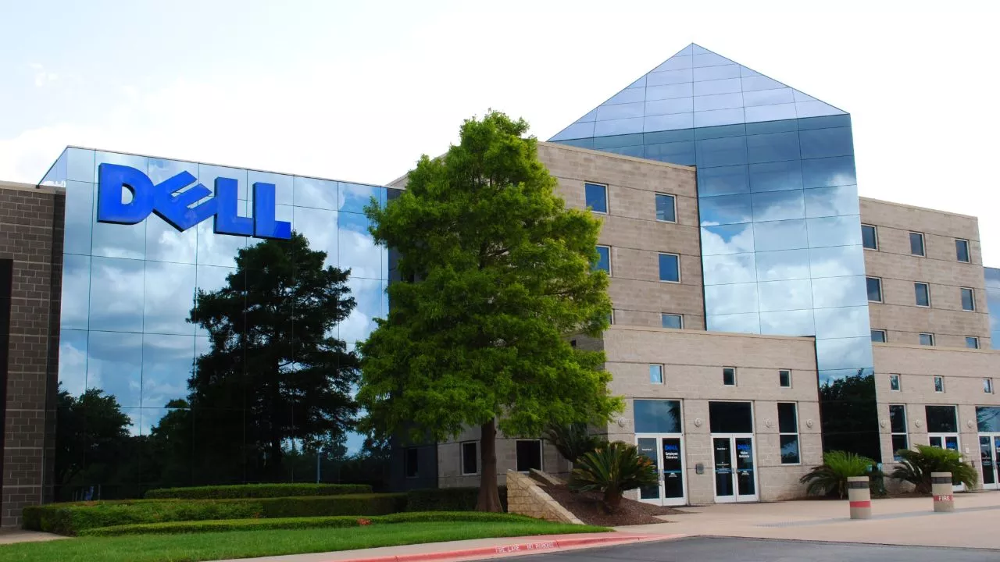
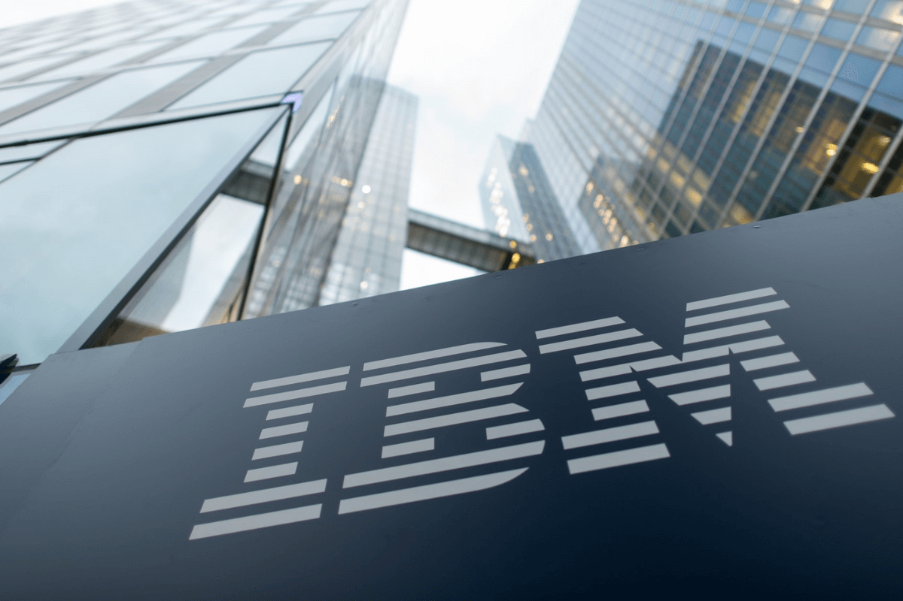
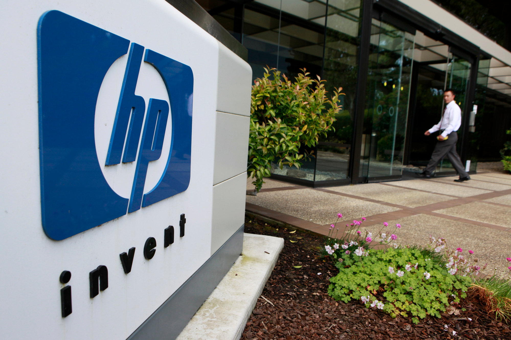
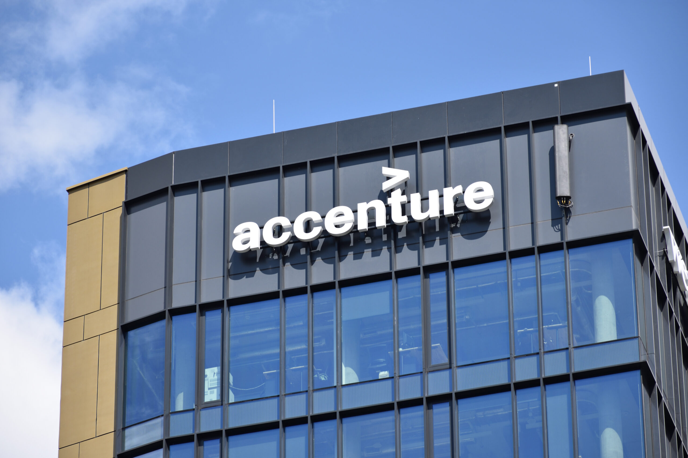
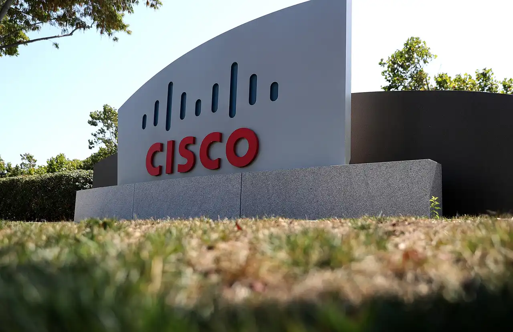
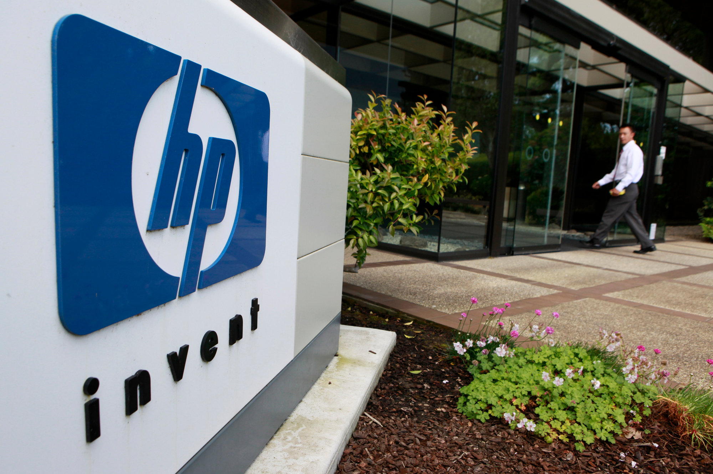

-

-

#2 IBM
Промисловість: Хмарні обчислення,комп'ютерне ПЗ.
Ринкова вартість: $126 млрд.
Співробітники: 307600 осіб.
IBM — друга за прибутковістю IT компанія у світі з річним доходом, що перевищує $67 мільярдів.
Компанія International Business Machines (IBM) або "Блакитний Гігант" (Big Blue), як її іноді називають, була заснована у 1911 році Чарльзом Флінтом.
За свою довгу історію, IBM подарувала нашому світу багато відмінних винаходів, серед яких дискети, жорсткі диски, магнітна смуга на кредитках, система штрих-кодів і багато іншого. До речі, перший банкомат також з'явився завдяки мейнфрейму компанії.
Сьогодні одні з найпопулярніших сервісів IBM пов'язані з хмарними та когнітивними обчисленнями, IT інфраструктурою, комп'ютерною безпекою, інтернетом речей, аналізом даних, блокчейном та штучним інтелектом.
IBM має представництва у більш ніж 170 країнах світу. Головний офіс знаходиться в Армонці, Нью-Йорк, США.
- 
#3 HP Enterprise
Індустрія: ПЗ, хмарне програмування, Інтернет речей, ІІ, зберігання даних, блокчейн та ін.
Ринкова вартість: $33 млрд.
Співробітники: 51 000 осіб.
HP Enterprise з'явилася у 2015 році після розпаду Hewlett Packard на дві компанії:
HP Inc., яка займається виробництвом ПК та обладнання, рішеннями для 3D принтерів тощо; HPE, яка фокусується на бізнес консультуванні та фінтех послуг. Компанія надає послуги в області ПЗ, SAAS та хмарних обчислень. Також вона займається розробкою центрів даних, додатків для ефективної роботи, системних та фінтех рішень.
Ще HPE має фінансовий відділ, який займається архітектурними та інвестиційними рішеннями, та підрозділ корпоративних інвестицій, які включають дослідницькі лабораторії та бізнес-інкубаційні проекти.
Серед клієнтів компанії є як підприємства різних розмірів, так і державні, навчальні та медичні установи.
Головний офіс знаходиться в Пало-Альто, Каліфорнія, США.
- 
#4 Accenture
Промисловість: Бізнес-консультування, стратегія, розробка, процеси.
Ринкова вартість: $172 млрд.
Співробітники: 624 тисячі осіб.
Accenture була створена як технологічний підрозділ бухгалтерської фірми під назвою Arthur Andersen, але в 1989 році вона перетворилася на незалежну компанію.
Сьогодні це одне з найбільших підприємств, що працюють у сфері цифрового маркетингу та надають бізнес-консультування, технологічні рішення, додатки для безпеки та підвищення продуктивності тощо.
Але компанія не має наміру зупинятися на цьому. Наступний пріоритетний та досить амбітний крок для Accenture – квантові обчислення.
Сьогодні компанія обслуговує клієнтів із понад 120 країн. Клієнтська база Accenture включає навіть таких гігантів як Microsoft, Oracle та SAP.
Головний офіс компанії знаходиться в Дубліні, Ірландія.
#5 Cisco Systems
Промисловість: Мережеве ПЗ.
Ринкова вартість: $178 млрд.
Співробітники: 79500 осіб.
Cisco Systems - п'ята найуспішніша IT компанія у світі за прибутком. Її річний прибуток вже перевищив $52 млрд. Зазвичай Cisco знають як виробника комутаторів, роутерів та іншого мережного обладнання.
Але з 2015 року компанія вирішила заглибитися в інноваційні галузі, пов'язані з ПЗ.
Компанія була заснована в 1984 році Леонардом Босаком та Сандрою Лернер. Вони створили комерційно успішний багатопротокольний маршрутизатор, який з'єднував раніше несумісні комп'ютери та побудований на базі стендфордського Blue Box Router.
Цікаво, що в 2000 році Cisco була найдорожчою компанією у світі, завдяки так званому Пухирю доткомів (Dot-com bubble).
Починаючи з 1993 року, Cisco поглинула приблизно 170 різних підприємств. Сьогодні вона має представництва у більш ніж 160 країнах, а головний офіс знаходиться у Сан-Хосе, Каліфорнія, США. Веб-сайт компанії
- 
#1 Dell Technologies
Індустрія: Комп'ютерне програмне забезпечення, хмарні обчислення.
Ринкова вартість: $32 млрд.
Співробітники: 133 тисячі осіб.
Сьогодні Dell вважається компанією ІТ з найбільшим прибутком у світі . Її річний прибуток становить $108 млрд., а кількість клієнтів у всьому світі перевищує позначку в 10 млн. Згодом підприємство стало одним із найпопулярніших виробників ПК та обладнання.
Dell була заснована 1984 року 19-річним студентом Майклом Деллом. Тоді його головною ідеєю був продаж ПК з адаптивними конфігураціями - при покупці клієнт міг вибирати будь-які необхідні комплектуючі, які б повністю відповідали його індивідуальним потребам.
Але з недавніх пір, завдяки своїм дочірнім компаніям EMC, Pivotal, RSA, Secureworks, Virtustream та VMware, воно почало більше фокусуватися на ПЗ, хмарних сховищах, віртуальній реальності, ІТ інфраструктурах, дата-центрах та цифровій безпеці.